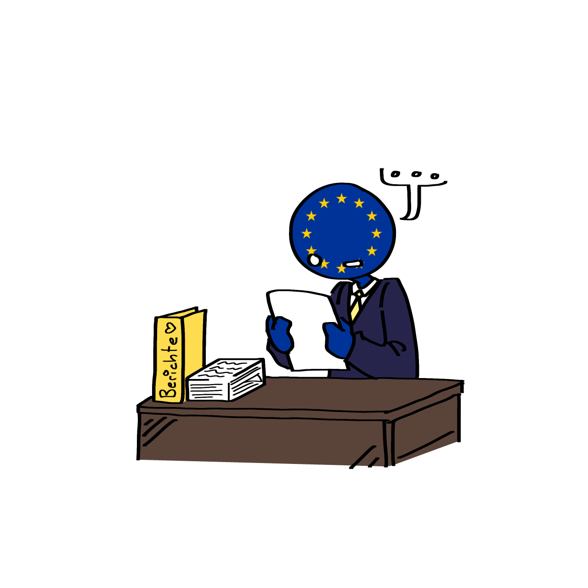

Trotz der Vielfalt an Problemen, die in der Digitalisierung bestehen, hat die EU einen konkreten Plan, wie sie deren Ziele effizient verfolgen und zur Realität machen können. Folgendes hat diese vorgenommen:
Jährliche Vorgehensweise für Kooperation zwischen den Mitgliedstaaten
- Strukturiertes, transparentes & gemeinsames Überwachungssystem auf Grundlage des DESI (The Digital Economy and Society Index) zur Messung von Fortschritten der Ziele der Digitalen Dekade
- Jährlicher Bericht für die Kommission zur Bewertung der Fortschritte
- Jeder Mitgliedstaat setzt eigene Pläne zur Verwirklichung der Ziele bis 2030 fest
- Jährlicher Rahmen für Empfehlungen und Absprachen von Kommission und Mitgliedstaaten zur Unterstützung bei Problemen in der Umsetzung
-
Unterstützung der Durchführung von Mehrländerprojekten
- große projekte zwischen mehreren oder allen Mitgliedstaaten, um große Ziele, wie die der Digitalisierung bis 2030 in die Realität umzusetzen, die ein einzelner Mitgliedstaat nicht allein angehen kann

Überwachung der Fortschritte
EU-Kommission überreicht dem Rat der EU jährliche berichte über den Fortschritt, um:
- Vergleiche zwischen digitaler Leistung und Zielen darzustellen
- gezielte Empfehlungen mit Rücksicht auf nationale Gegebenheiten zu geben